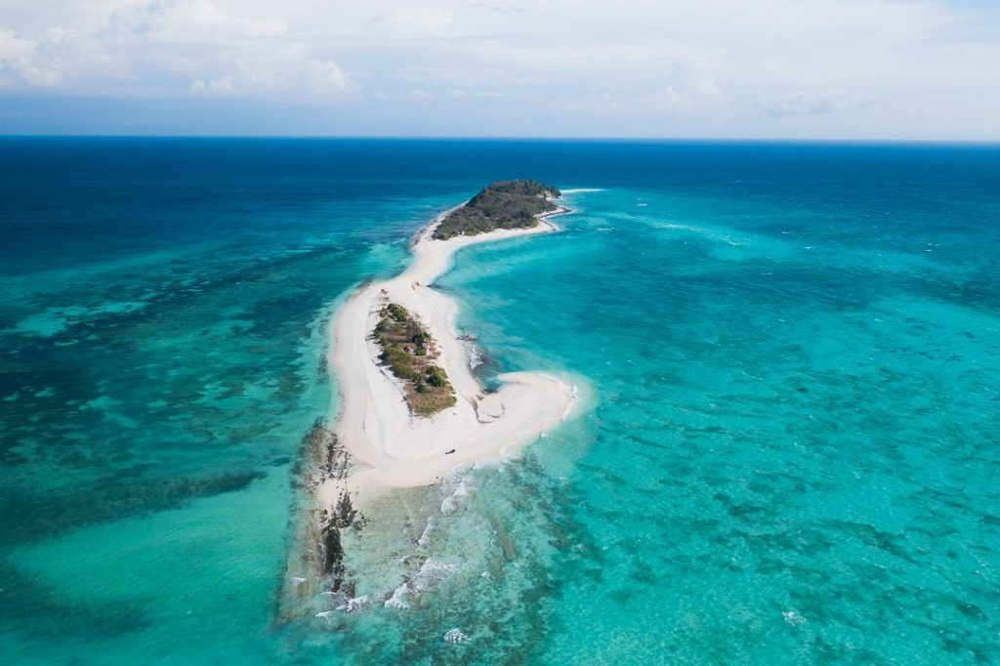
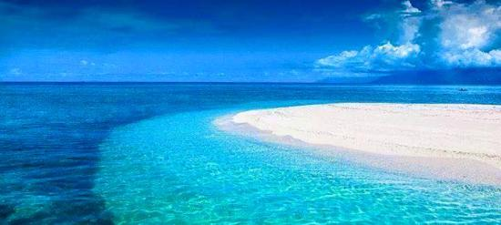
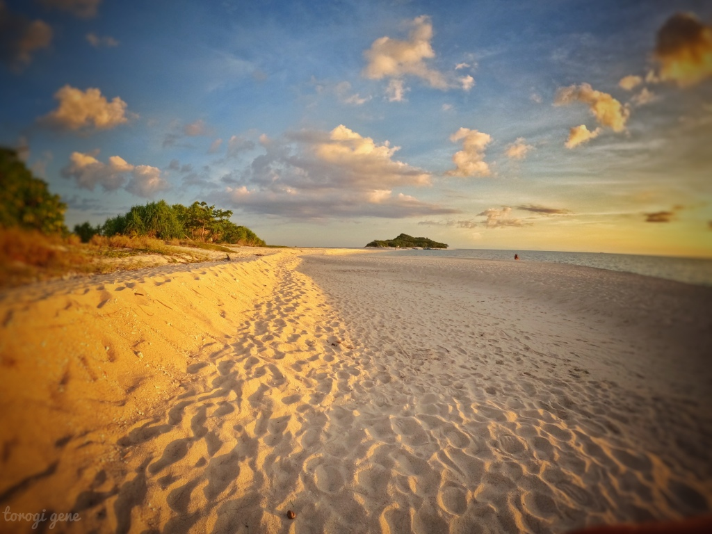
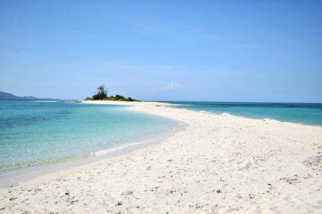

Discover the Beauty of Cresta de Gallo
Cresta de Gallo is a small, pristine island located in Romblon, Philippines. Famous for its powdery white sand, turquoise waters, and peaceful atmosphere, it’s the perfect escape for travelers looking for untouched beauty.
Photos




Why Visit Cresta de Gallo?
- Stunning white sandbar stretching into the sea
- Crystal-clear turquoise waters perfect for swimming
- Completely secluded – no crowds, just nature
- Ideal for snorkeling and marine exploration
- Breathtaking sunrises and sunsets